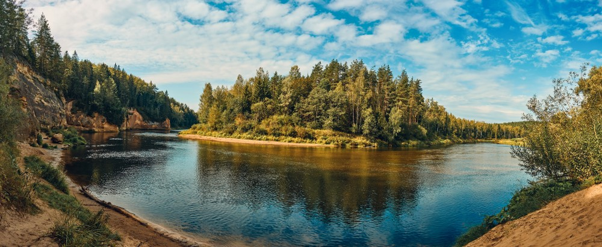
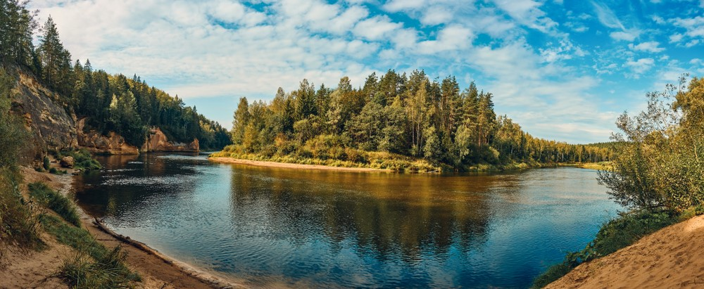

Letonia
Letonia
Características de Letonia
"Tierra de los lagos Azules"
Es un país fascinante que mezcla una naturaleza muy virgen con una tecnología moderna.
- Ubicación y Geografía
Corazón del Báltico: Es el país central de los tres Estados Bálticos (situado entre Estonia al norte y Lituania al sur).
Costa: Tiene más de 500 km de costa arenosa bañada por el Mar Báltico.
Terreno plano: Es un país muy llano. No tiene montañas; su punto más alto apenas supera los 300 metros.
- Naturaleza: El "País Verde"
Bosques inmensos: Es uno de los países más verdes de Europa. Más del 50% de su territorio está cubierto de bosques.
Agua por todas partes: Tiene más de 12.000 ríos y 3.000 lagos pequeños.
Las 4 estaciones: Tienen inviernos fríos y nevados, y veranos suaves donde los días son extremadamente largos (casi no oscurece en junio).
- Cultura y Sociedad
Riga (La Capital): Es la ciudad más grande de los estados bálticos. Es mundialmente famosa por su arquitectura Art Nouveau (Jugendstil); tiene la mayor concentración de edificios de este estilo en el mundo.
Nación de cantantes: La música coral es sagrada allí. Tienen un "Festival de la Canción y la Danza" cada 5 años que es Patrimonio de la Humanidad por la UNESCO, donde coros de decenas de miles de personas cantan a la vez.
Carácter: Los letones suelen ser vistos como reservados e introvertidos al principio, pero muy amables una vez se rompe el hielo.
- Tecnología y Modernidad
Internet ultra-rápido: Letonia suele estar en el top mundial de velocidad de internet. Tienen una de las mejores infraestructuras de 4G/5G y fibra óptica de Europa.
Startups: Es un hub tecnológico creciente en el norte de Europa.
- Curiosidades Únicas
El Ámbar: Se le conoce como el "oro del Báltico". Es muy común encontrar joyas y artesanías hechas de esta resina fosilizada que el mar arroja a las playas.
Su bandera (Tu código): La bandera granate-blanca-granate es una de las más antiguas del mundo que sigue en uso hoy en día (data del siglo XIII). La leyenda dice que una sábana blanca se manchó con la sangre de un líder herido, dejando solo la franja central blanca donde estaba su cuerpo.
Mujeres altas: Estadísticamente, Letonia tiene una de las poblaciones femeninas más altas del mundo.

 

Bandera de Letonia
Volver a la página principal